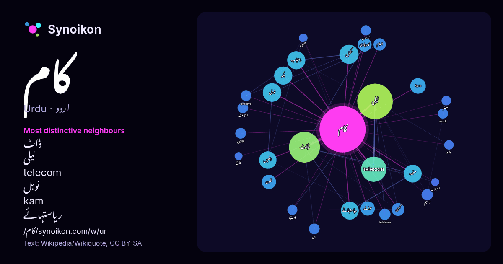

اردو · مقبول لفظ
کام
“work” · ویکیپیڈیا, Wikiquote کے 996 استعمالات میں اس کے آس پاس ملنے والے الفاظ۔

سب سے نمایاں پڑوسی
- ڈاٹ 66×
- ٹیلی 54×
- telecom 48×
- نوبل 21×
- kam 20×
- ریاستہائے 19×
- دستیاب 18×
- متحدہ 13×
- انھیں 12×
- کاروباری 12×
- telekom 11×
- archive 9.8×
- work 8.9×
- ڈوئچے 8.8×
- مکمل 8.7×
- ترمیم 8.5×
- ملازمین 8.3×
- انعام 8.0×
- حوالے 7.9×
- جگہ 7.7×
× = عام ویکیپیڈیا متن کے مقابلے میں کتنے گنا زیادہ۔
سب سے زیادہ آنے والے پڑوسی
- میں 232
- کا 176
- سے 123
- کیا 113
- ٹیلی 99
- اس 92
- کو 91
- ڈاٹ 75
- کرنے 66
- ان 57
- telecom 50
- لیے 50
- بھی 46
- کر 44
- وہ 44
- یا 39
- جو 38
- نے 37
- تھا 30
- مکمل 29
سیاق میں
- کام (work) کے کئی استعمالات ہیں جو درج ذیل ہیں۔ کام (طبیعیات) (میکانیکی کام)، کسی قوت کی طرف سے تبدیل شدہ توانائی کی مقدار کام (حرحرکیات)، ایک نظام سے Wikipedia snippets · کام
- لفظ کام کے دیگر استعمالات کے لیے دیکھیے مقالہ کام کام یا کاما (Kama) کے معنی خواہش، احتیاج، محبت و شہوت کے ہیں۔ یہ ہندو مت کے مطابق چار بنیادی مقاصد حیات Wikipedia snippets · کام (ہندومت)
- جیٹ2ڈاٹ کام (انگریزی:Jet2.com ) برطانیہ کی ہوائی کمپنی ہے ۔ جیٹ2ڈاٹ کام کا مرکزی دفتر برطانیہ کے ائیر پورٹ Leeds Bradford Airport پر واقع ہے۔ "ائیرپورٹس Wikipedia snippets · جیٹ2ڈاٹ کام
- دہائی کے اختتام تک بھی ’’بی کام‘‘ کرنے والوں کو فوری نوکری مل جاتی تھی۔ تاہم اس کے بعد اور موجودہ طور صورت حال بدل گئی ہے۔ بی کام کے حاملین زیادہ تر اکاؤنٹنگ Wikipedia snippets · بی کام
- کام کی جگہ (انگریزی: Workplace) وہ مقام ہے جہاں ایک شخص اپنے آجر کے لیے کام کرتا ہے۔ یہ وہ جگہ ہے جہاں کسی کی ملازمت ہوتی ہے۔ ایسی جگہ ایک خانہ نما دفتر Wikipedia snippets · کام کی جگہ
- میکانیکی کام انگریزی:mechanical work Wikipedia snippets · میکانیکی کام
- کام ائیر (انگریزی:Kam Air ) افغانستان کی ہوائی کمپنی ہے ۔ کام ائیر کا مرکزی دفتر افغانستان کے ائیر پورٹ حامد کرزئی انٹرنیشنل ایئرپورٹ پر واقع ہے۔ ^ ا Wikipedia snippets · کام ائیر
- ایم کام، ایم کام ایم یا ماسٹر آف کامرس کی تعلیمی سند ایک پوسٹ گریجویٹ ماسٹرز سطح کی ڈگری ہے جو تجارت، کھاتہ نویسی، مینیجمنٹ اور معاشیات پر توجہ دیتی ہے۔ Wikipedia snippets · ایم کام
مزید الفاظ
2026-10-09 کو طے شدہ ترتیبات (±5 الفاظ، درمیانہ کارپس) کے ساتھ پہلے سے شمار کیا گیا۔ انٹرایکٹو نقشہ اسے لائیو ڈیٹا سے تازہ کر سکتا ہے۔
مشینی ترجمہ شدہ انٹرفیس؛ اصلاحات کا خیرمقدم ہے۔